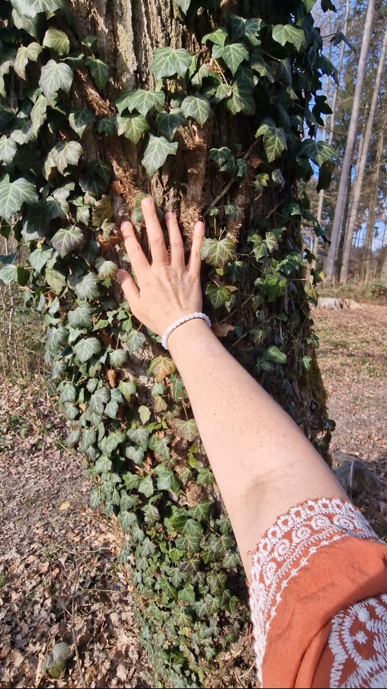
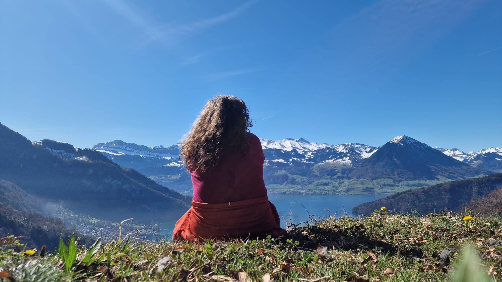

Overthinking every decision until they no longer know what they truly want.
Beyond Surviving · 5-week live online group experience
You don’t need more motivation.
You need to feel safe enough
to choose yourself.
For the woman who has become brilliant at holding everything together, while quietly losing access to herself.
5 September –
3 October 2026
Saturdays
09:00–12:00 CET
Live online
Small pilot group of 10 women
€297
or 2 payments of €148.50
You do not need to have everything figured out before you join.
Beyond Surviving is a five-week live group experience for women who are tired of overthinking, people-pleasing, carrying everyone else’s expectations, and wondering why a life that looks good on paper still feels heavier than it should.
Across five Saturdays, this experience creates three protected hours each week to step out of the noise, return to yourself, and give the parts of your life that usually get pushed aside some honest attention.
It is time deliberately held for the relationship that shapes every other part of your life: the one you have with yourself.
For women who are tired of:
Saying yes in conversations and relationships, then carrying the weight of that yes for days.
Being the reliable one for everyone else, while feeling increasingly absent from their own life.
The quiet truth underneath the capable life
You have a good life. At least that’s what everyone would say..
You may just no longer feel fully present inside it.
You worked hard for the life you have.
You built a career, became reliable, and learned how to be capable, independent, and the person people turn to when something needs to be handled.
Most people would probably describe you as someone who has it together. And in many ways, you do.
Yet there are moments when something inside you goes quiet.
It happens on Sunday evenings, when the weekend version of you slowly disappears and the survival version begins preparing for another week.
It happens when someone asks for something you do not want to give and the yes leaves your mouth before there has been time to check what you need.
It happens when the words you know you want to say remain somewhere in your throat, while the answer that keeps everyone comfortable comes out instead.
From the outside, nothing may be falling apart. Inside, however, you may have started disappearing from the life you worked so hard to build.
Yes, I Want to Come Back to Myself
Why insight has not been enough
You are not stuck because you do not know enough.
There is already an awareness of the relationships that leave you drained, the places where you have been settling, and the moments when saying yes feels safer than risking someone else’s disappointment.
You have read the books, listened to the podcasts, reflected on your childhood, journaled about your feelings, and promised yourself that next month will be different.
Yet when the moment arrives, something familiar takes over.
Somewhere along the way, being accepted began to feel safer than being fully yourself. That adaptation may have helped you belong. It is also why choosing yourself can feel frightening now, even when a part of you knows it is necessary.
Beyond Surviving is a structured, supportive space where you can slow down enough to hear yourself again, understand what your body has been trying to tell you, and practise responding to yourself with more honesty and care.
What becomes possible when you stop abandoning yourself?
The purpose of this experience is not to ask for a dramatic decision or to turn you into a different person within five weeks. It is to create enough safety that the next honest choice becomes possible.
Hear yourself again
The signals you have spent years overriding begin to make more sense, while simple practices offer a way back from mental noise and into your body when life feels too much.
Notice where you abandon yourself
The patterns behind shrinking, overgiving, keeping the peace, or choosing what feels safest for everyone else become easier to recognise.
Take one honest step
Insight begins to take a more tangible shape through a boundary, conversation, decision, or action that brings your life closer to what feels true for you.

The way back to yourself rarely begins with a dramatic decision. It begins with noticing what has been true for a long time.
The 5-week journey
Your journey back to yourself, one honest week at a time
Each session is live, guided, and intentionally structured. The space is designed to offer enough structure for your nervous system to settle, while leaving room for your own pace, experience, and truth.
Week 1
Reconnecting to your authentic self
From disconnection → safety
The first week creates the foundation for everything that follows. Through grounding, reflection, and the Wheel of Life, the version of you who exists underneath what everyone expects begins to come back into view.
Week 2
What your body already knows
From surviving → presence
Your body has been communicating through tension, exhaustion, restlessness, numbness, and the moments when everything suddenly feels too much. A personal map of your body’s signals becomes something to return to whenever you need it.
Week 3
The relationships where you lose yourself
From fear of disappointing → choice
There are often relationships where the automatic yes appears before there has been time to check in. Reflection, guided practice, and supported conversations begin to make communication from self-respect feel more available.
Week 4
The life that feels like yours
From knowing → doing
Space opens for the desires, decisions, and possibilities that may have been buried beneath responsibility, fear, and the belief that it is too late or too selfish to want more. One concrete step is chosen before the final session.
Week 5
This is just the beginning
From program → your life
The program closes with a clearer relationship with yourself, practical tools to return to when life feels difficult, and a next step that remains yours to keep choosing.
What’s included
A real container, not five calls you have to “make the most of.”
- Five live online group sessions, held every Saturday from 09:00–12:00 CET.
- An intimate pilot group of no more than 10 women.
- Limited-time access to session recordings during the program.
- A private WhatsApp group for questions, reflections, support, and weekly rituals.
- Guided embodiment practices, reflection exercises, and partner witnessing, always with freedom to participate at the pace that feels right.
- A closing integration plan and a personal next step to carry beyond the program.
Meet your facilitator
I know what it is like to build a life that looks right and still not feel fully at home inside it.
For years, I was the reliable one. I built a successful corporate life, met expectations, and kept telling myself that the next milestone would eventually make everything feel more meaningful.
What changed was not more information. It was learning to listen to the parts of me I had learned to override: my body, my emotions, my truth, and the quiet inner voice that had been trying to lead me home.
Today, as a Holistic Life Coach, I bring together coaching, embodiment, nervous-system awareness, and deep presence to create spaces where women do not need to perform healing correctly. They can begin exactly where they are.
Client words
What women have begun to remember about themselves
“I had never really given myself space and time to think about me. I felt quite alone in all of it. The idea of creating a space where women can feel safe enough to say what they feel, and let the fears and pain come to the surface, felt wonderful. I realised that this is what the program would mean for me.”
“Working with Roberta helped me build more trust in myself and my ideas. I can make decisions without feeling guilty, and I have become more detached from needing a particular outcome. I now see my choices as part of a journey, rather than something I have to get perfectly right.”
“I had been doing a lot, pulling myself in every direction, yet something still felt missing. Working with Roberta helped me see how often I put myself last and how rarely I asked what I truly wanted. I now feel more trust in my direction, more calm inside myself, and more curiosity about what comes next.”
“The space Roberta created gave me the courage to be vulnerable with thoughts I found difficult to face. It reminded me that my real self is still there.”
“The power of saying no became clearer to me. When I can see that someone else can manage without me, I can say no with much more confidence and far less guilt.”
“I had never really given myself space and time to think about me. I felt quite alone in all of it. The idea of creating a space where women can feel safe enough to say what they feel, and let the fears and pain come to the surface, felt wonderful. I realised that this is what the program would mean for me.”
“Working with Roberta helped me build more trust in myself and my ideas. I can make decisions without feeling guilty, and I have become more detached from needing a particular outcome. I now see my choices as part of a journey, rather than something I have to get perfectly right.”
“I had been doing a lot, pulling myself in every direction, yet something still felt missing. Working with Roberta helped me see how often I put myself last and how rarely I asked what I truly wanted. I now feel more trust in my direction, more calm inside myself, and more curiosity about what comes next.”
“The space Roberta created gave me the courage to be vulnerable with thoughts I found difficult to face. It reminded me that my real self is still there.”
“The power of saying no became clearer to me. When I can see that someone else can manage without me, I can say no with much more confidence and far less guilt.”
This may be for you if…
There is a quiet part of you that knows the way you have been living is no longer sustainable, even if the next step is not fully clear yet.
This is a space for women who are willing to be honest, curious, and present with themselves. It is not therapy, crisis support, or a promise that your whole life will change in five weeks.
What it offers is something more grounded: a held beginning, practical tools, embodied awareness, and the experience of choosing yourself in small, real ways.
Questions before joining
You may be wondering…
What if I am not ready to make big changes?
Readiness does not need to look like certainty. Beyond Surviving is designed for the moment when something inside you knows that the current way of living is no longer sustainable, even if the next step is not yet clear.
What if I am afraid to speak in a group?
You will always be invited, never pushed. There is space for sharing, reflection, and connection, but there is no expectation to reveal more than feels safe. Listening, noticing, and being witnessed are all valid ways of participating.
What if I have already done therapy, coaching, or a lot of self-development?
This program may be especially meaningful if you recognise the gap between understanding your patterns and being able to respond differently when it matters. The work is designed to help insight move from your head into your body and your everyday choices.
Is this therapy?
No. Beyond Surviving is a coaching and embodiment-based group experience. It is not therapy, medical treatment, or a substitute for mental-health support.
What if I miss a session?
Recordings will be available for a limited time during the program, allowing you to revisit the session and continue with the reflections at your own pace. Because this is a live group process, attending the sessions in real time is encouraged whenever possible.
What happens if I need to cancel?
Because this is a small live group experience with only 10 places, your seat is reserved once your payment is confirmed. You may request a full refund within 14 days of purchase, provided the program has not yet started. If you cancel more than 14 days before the start date, your payment can be refunded minus a €50 administrative fee. Cancellations made within 14 days before the program begins are non-refundable, although you may transfer your place to a future round or to another suitable participant, with approval.
Once the program has started, refunds are not available for missed sessions. If Beyond Surviving is cancelled by the facilitator, you will receive a full refund.
Beyond Surviving
You do not need to become more.
You need to come back.
If a part of you is tired of waiting for life to feel different on its own, this is an invitation to stop carrying that part alone.
Beyond Surviving is a place to create enough safety to hear what has been true inside you all along, and to begin living from there in small, honest ways.
5 September – 3 October 2026
Saturdays · 09:00–12:00 CET
Live online · 10 women
€297 or 2 payments of €148.50
Still wondering whether this experience is right for you? We can have a short call together, so you can ask what you need and feel into whether this is the right next step for you.
Book a 30-Minute Call